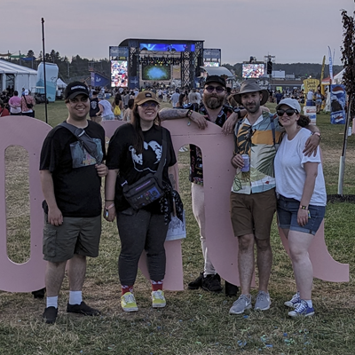
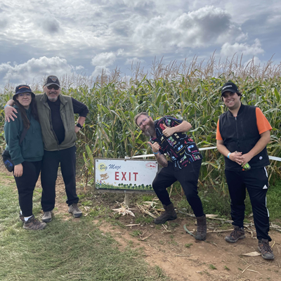

Amanda J. Kruger
First Year IT Programming Student @ NSCC.
I am new to programming and am enjoying learning the concepts and languages required to write computer programs and design webpages.
First Year IT Programming Student @ NSCC.
I am new to programming and am enjoying learning the concepts and languages required to write computer programs and design webpages.
I am a 33 year old IT Programming Student currently studying at NSCC’s Annapolis Valley COGS campus.
Returning to school as an adult has been a life changing experience, I really enjoy learning new things and it is my goal to continue learning and challenging myself from this point on.
Outside of my studies I enjoy spending time with family and friends, hiking, reading, longboarding, and listening to live music. I also enjoy learning and playing different board games, assembling LEGO sets, and taking photos.
 Honours Student, received Dean's Award for Academic Excellence
Learned problem solving techniques, code documentation, number systems, boolean math, set theory, modular programming, data storage and processing, list methods, and software testing/debugging. Worked with my team to write a game using Python.
Web DevelopmentBuilt proficiencies in HTML 5 and CSS3. Worked with multiple layout types, built functioning web forms and worked with a team to build a website which benefits NSCC/COGS students.
DatabasesLearned how to achieve data normalization, create entitry relationship diagrams, write advanced SQL queries, create database schema's and write scripts to populate a database.
Networks & SecurityGained an understanding of the OSI Model, command line tools, Wireshark, IP addressing/Subnets, cabling standards, built and tested firewalls. Built a functioning network connecting two sites with fully secured and configured switches and DHCP/DNS/File Servers as well as a Web Server.
Windows AdministrationLearned how to install and configure Windows machines, became familiar with Windows System Utilities, disk management, DOS commands, user and group management, security and event logs, backups, powershell, and remote access.
{kind=link}
{kind=link}
{kind=link}
{kind=link}
{kind=link}